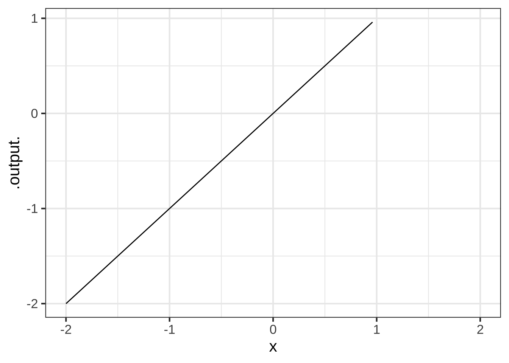
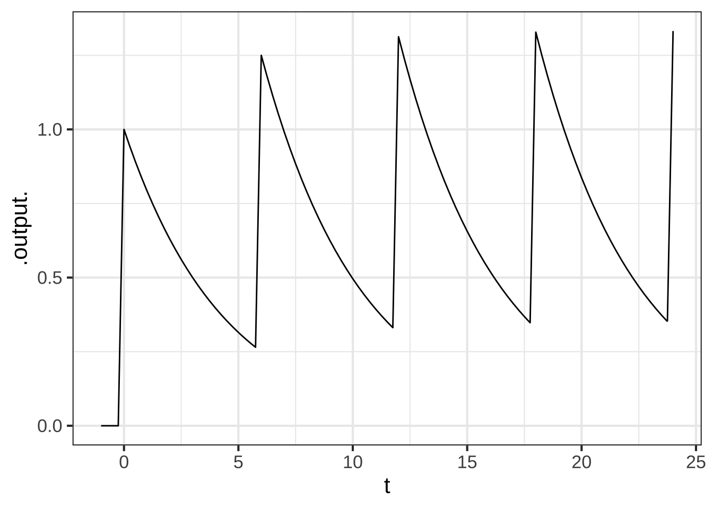

Chapter 13 Piecewise functions
Each of our basic modeling functions, with two exceptions, has a domain that is the entire number line \(-\infty < x < \infty\). No matter how big or small is the value of the input, the function has an output. Such functions are particularly nice to work with, since we never have to worry about the input going out of bounds.  1500
1500
The two exceptions are:
- the logarithm function, which is defined only for \(0 < x\).
- some of the power-law functions: \(x^p\).
- When \(p\) is negative, the output of the function is undefined when \(x=0\). You can see why with a simple example: \(g(x) \equiv x^{-2}\). Most students had it drilled into them that “division by zero is illegal,” and \(g(0) = \frac{1}{0} \frac{1}{0}\), a double law breaker.
- When \(p\) is not an integer, that is \(p \neq 1, 2, 3, \cdots\) the domain of the power-law function does not include negative inputs. To see why, consider the function \(h(x) \equiv x^{1/3}\).
It can be tedious to make sure that you are on the right side of the law when dealing with functions whose domain is not the whole number line. The designers of the hardware that does computer arithmetic, after several decades of work, found a clever system to make it easier. It’s a standard part of such hardware that whenever a function is handed an input that is not part of that function’s domain, one of two special “numbers” is returned. To illustrate:
sqrt(-3)## [1] NaN(-2)^0.9999## [1] NaN1/0## [1] InfNaN stands for “not a number.” Just about any calculation involving NaN will generate NaN as a result, even those involving multiplication by zero or cancellation by subtraction or division.19 For instance:
0 * NaN## [1] NaNNaN - NaN## [1] NaNNaN / NaN## [1] NaNDivision by zero produces Inf, whose name is reminiscent of “infinity.” Inf infiltrates any calculation in which it takes part: 1510
3 * Inf## [1] Infsqrt(Inf)## [1] Inf0 * Inf## [1] NaNInf + Inf## [1] InfInf - Inf## [1] NaN1/Inf## [1] 0To see the benefits of the NaN / Inf system let’s plot out the logarithm function over the graphics domain \(-5 \leq x \leq 5\). Of course, part of that graphics domain, \(-5 \leq x \leq 0\) is not in the domain of the logarithm function and the computer is entitled to give us a slap on the wrists. The NaN provides some room for politeness.
Open a sandbox and see what happens when you make the plot.
slice_plot(log(x) ~ x, domain(x=c(-5,5)))13.1 Splitting the domain
In a purely mathematical sense, the problem with functions being undefined over an extended part of a domain has been handled with cunning and imagination, but the solution—the invention of complex numbers—is not our concern here. Instead, we’re going to embrace functions that have a domain smaller than the whole number line and see what we can do with them.
To illustrate, let’s use computer notation to create a function whose domain is \(x < 1\). To do this, we need a way to write “if,” as in, “If \(x\) is 1 or greater, return NaN.” We’ll use a function in R that let’s us ask a TRUE/FALSE question and, depending on the answer, do one or another calculation. The question-answering R function is ifelse() whose name is remarkably descriptive. The ifelse() function takes three arguments. The first is the question to be asked, the second is the value to return if the answer is “yes,” and the third is the value to return for a “no” answer.
g <- makeFun( ifelse(x < 1, x, NaN) ~ x)
slice_plot(g(x) ~ x, domain(x = c(-2, 2)))
What takes getting used to here is the expression x < 1 which is a question not a statement of fact. There’s no standard traditional mathematical notation for questions, although some people use a question mark as in \(x \stackrel{?}{<} 1\).
The table shows computer notation for some common sorts of questions. 1520
| R notation | English |
|---|---|
x > 2 |
“Is \(x\) greater than 2?” |
y >= 3 |
“Is \(y\) greater than or equal to 3?” |
x == 4 |
“Is \(x\) exactly 4?” |
2 < x & x < 5 |
“Is \(x\) between 2 and 5?”20 |
x < 2 | x > 6 |
“Is \(x\) either less than 2 or greater than 6?” |
abs(x-5) < 2 |
“Is \(x\) within two units of 5?” |
13.2 Basic piecewise functions
Having an ability to split up the domain of a function and provide different formula for each of the pieces allows us to construct piecewise functions. To illustrate, the function \(h(x) \equiv |x|\). You’ll recognize this as the “absolute value” function. The intuitive algorithm is to “strip the negative sign, if any” from the input. But with the ability to divide the domain into pieces, we gain access to a less mysterious sort of arithmetic operation and can re-write \[h(x) \equiv \left\{ \begin{array}{ll} x & \text{for}\ 0 \leq x \\ \text{- x} & \text{otherwise}\\\end{array} \right.\] Or, in computer notation
h <- makeFun(ifelse(x >= 0, x, -x) ~ x)Note that the absolute value function is built-in to R in the form of the abs() function.
Less familiar is the Heaviside function which has important uses in physics and engineering:
\[\text{Heaviside}(x) \equiv \left\{ \begin{array}{cl} 1 & \text{for}\ 0 \leq x \\0 & \text{otherwise}\end{array} \right.\] In computer notation, this is
Heaviside <- makeFun(ifelse(x < 0, 0, 1) ~ x) The vertical gap between the two pieces is called a discontinuity. Intuitively, you cannot draw a discontinuous function without lifting the pencil from the paper. The Heaviside function has a discontinuity at \(x=0\).
The vertical gap between the two pieces is called a discontinuity. Intuitively, you cannot draw a discontinuous function without lifting the pencil from the paper. The Heaviside function has a discontinuity at \(x=0\).
Similarly, the ramp function (aka “ReLU”) is a kind of one-sided absolute value: \[\text{ramp}(x) \equiv \left\{ \begin{array}{cl} x & \text{for}\ 0 \leq x\\0 & \text{otherwise}\end{array} \right.\] Or, in computer notation:
ramp <- makeFun(ifelse(0 < x, x, 0) ~ x)
slice_plot(ramp(x) ~ x, domain(x=c(-3, 3)))
A linear combination of two input-shifted ramp functions gives a piecewise version of the sigmoid.
sig <- makeFun(ramp(x+0.5) - ramp(x-0.5) ~ x)
slice_plot(sig(x) ~ x, domain(x=c(-3, 3)))
Figure 13.1 is a graph of monthly natural gas use in the author’s household versus average temperature during the month. (Natural gas is measured in cubic feet, appreviated ccf.) 1530

Figure 13.1: The amount of natural gas used for heating the author’s home varies with the outside temperature.
The graph looks somewhat like a hockey stick. A sloping straight-line dependence of ccf on temperature for temperatures below \(60^\circ\)F and constant for higher temperatures. The shape originates from the dual uses of natural gas. Gas is used for cooking and domestic hot water, the demand for which is more of less independent of outdoor temperature at about 15 ccf per month. Gas is also used for heating the house, but that’s needed only when the temperature is less than about \(60^\circ\)F.
We can accomplish the hockey-stick shape with a linear combination of the ramp() function and a constant. The ramp function represents gas used for heating, the constant is the other uses of gas (which are modeled as not depending on temperature. Overall, the model is \[\text{gas_ccf}(x) \equiv 4.3\, \text{ramp}(62-x) + 15\] Even simpler is the model for the other uses of natural gas: \[\text{other_ccf}(x) \equiv 15\].
Our last example concerns a bit of familiar technology: music synthesis. Generating a pure tone electronically is easily done using a sinusoid. Generating a note with rich instrumental timbre can be accomplished by a linear combination of sinusoids. Of course, the note will be localized in time. This could be accomplished by multiplying the sinusoids by a gaussian function envelope. 1540
It turns out that the gaussian function, dnorm(), does not generate a realistic sound. Instead, a more complicated envelope is used, such as the ADSR function shown in Figure 13.2. The function has six (!) parameters: the time the key is pressed, the duration A of the “attack” phase when the sound amplitude is increasing in response to the impulse imposed on the key, a decay of duration D to an output level S that lasts until the key is released, then a decay to zero over duration R. It’s reasonable to think of the D and S phases as a piecewise linear approximation to exponential decay.
)](www/adsr.png)
Figure 13.2: The ADSR envelope function used in music synthesis consists of 6 pieces including zero output before the key is pressed and after the pulse ends. Source
13.3 Exercises
Exercise 13.05: EDKYV
The function bigger() is defined piecewise in terms of two extremely simple functions. Each of the two simple functions has a contour plot with contours that are parallel. The piecewise combination of the simple functions has a more complicated contour plot, with each simple function’s parallel contours showing up in half of the domain. We’ll call these “pieces” of the domain.
bigger <- makeFun(ifelse(y > x, y, x) ~ x + y)
contour_plot(bigger(x,y) ~ x+y, domain(x=c(-2,2), y=c(-2,2)))
Question A Which of the following best describes the two pieces of the domain?
- One is above and to the left of the line of identity (that is, \(y=x\)) and the other is below and to the right of that line.Nice!
- One is \(x > 0\) and the other \(x \leq 0\)︎✘
- One is \(x > 0\) and the other \(y \leq 0\)︎✘
Exercise 13.07: E9e7c6
library(Zcalc)If you are unlucky and develop a serious ear or throat or other infection, and if the infection is bacterial and not viral, you may be prescribed antibiotics. You probably know how it goes. You go to the pharmacy to pick up a bottle of pills. There might be anywhere between 10 pills and 40. The directions will certainly tell you to make sure to finish the bottle; to take the full course of medication. It may say take a pill twice a day, or three times, or every six hours, perhaps with food.
The details of this regimen are determined largely by the details of whether food inhibits or buffers absorption of the medicine and by the efficiency by which your body metabolizes the medicine and then removes it from your blood via your liver.
Modeling this process—often called the *pharmacokinetics of the drug—is an important step in drug development. A simple but effective model of the drug concentration over time is a piecewise function: zero before you take the pill, then an exponential decay from an initial level of one unit after you take the pill.
pill <- makeFun(ifelse(t < 0, 0, exp(-k * t)) ~ t, k = log(2)/1.5)The shape of the pill() function is seen in Figure 13.3. Another part of the model is the therapeutic threshold, the minimal concentration for medical effectiveness. Keep in mind that this is a model. In reality, the drug not is absorbed instantaneously as in the model, and the medical effectiveness varies smoothly with concentration rather than being an all-or-nothing affair.
slice_plot(pill(t) ~ t, domain(t=-2:10)) %>%
gf_hline(yintercept = ~ 0.25, color="magenta") %>%
gf_text(0.25 ~ 8, label="Therapeutic threshold", color="magenta",
vjust=0, nudge_y=0.02) %>%
gf_labs(y="Drug availability", x = "Time (hrs)")
Figure 13.3: A simple illustrative model of drug availability from taking a unit dose at time zero. The therapeutic threshold depends on the drug: 0.25 is shown here.
The critical features of the model are the half-life of the drug in the body and the therapeutic threshold, both of which depend on the particular drug in question.
Question A What is the half life of the drug depicted in the Figure 13.3?
60 minutes︎✘ 90 minutes\(\heartsuit\ \) 120 minutes︎✘ 180 minutes︎✘
Figure 13.3 shows the availability from a single pill. The goal of taking multiple pills, spread out over time, is to keep the drug availability above the therapeutic threshold for an extended time, e.g. 10 days. There are three parameters to the therapy: how often you take a pill, and the dose delivered by a single pill, and the medicine’s half-life.
Question B Occasionally, the prescription directs you to take a single pill once a day. Suppose the half-life of the medicine is 3 hours. How big would the dose A need to be in order to keep the availability above a threshold of 0.25 for a 24-hour period?
2 units︎✘ 16 units︎✘ 64 units\(\heartsuit\ \) 1024 units︎✘
Let’s explore a familiar-sounding directive: Take one pill every six hours. We can model this by a linear combination of time-shifted pill() functions. Each pill provides a dose of size A.
six_hours <-
makeFun(A*pill(t, k) + A*pill(t-6, k) +
A*pill(t-12, k) + A*pill(t-18, k) +
A*pill(t-24, k) ~ t,
k=log(2)/3, A = 1)
slice_plot(six_hours(t) ~ t, domain(t=-1:24)) The graph shows that the drug is above the therapeutic threshold (0.25) for the entire first day.
From the graph of drug availability versus time, do you think continuing the one-pill-every-6-hours regimen will continue to keep the drug level over the therapeutic threshold for the remainder of the course of treatment? Explain why or why not.
Let’s switch to an one-pill every 8 hour regimen, the pills being taken at midnight, 8am, and 4pm, …
How big a dose
Awill be needed to keep the drug availability above the therapeutic threshold for the entire course of treatment? (Hint: Construct a function analogous tosix_hours()and plot out the drug availability over the 24 hours of the first day. Then vary the doseAuntil you find the minimum dose that keeps the availability over the threshold of 0.25 for the entire day.)
Suppose the instructions were to take 2 pills when you start treatment and then an additional pill every 8 hours. How big a dose
Awould be needed to keep the drug availability above the therapeutic threshold for the entire course of treatment?
Which of the three regimens described (6-hour, 8-hour, 8-hour-double-first-dose) involves the smallest total dose? (The total dose is the sum of the doses for each pill administration.)